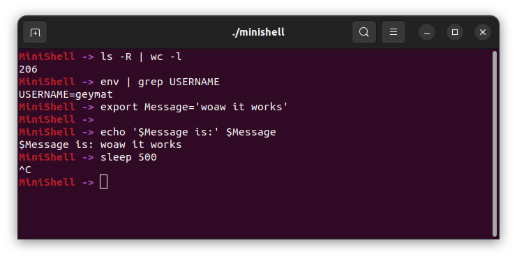

minishell
Recréation d'un shell en C

Le projet
L'objectif était de refaire un shell avec variable d'environnements, gestion de commandes, gestion de redirections, gestion d'erreur, controle de signaux, quotes et double quotes, etc.
Ce que j'ai appris
Ce projet commencé au bout de 6 mois de cursus dans mon école et ce qui m'a réellement fait comprendre la machine que j'utilisais, autant d'un point de vu de bash ou des commandes linux
Également ce fut mon premier projet en groupe mais il a été réalisé sans outils de coordinations particuliers
← Retour aux projets